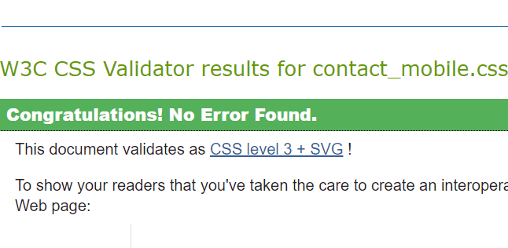
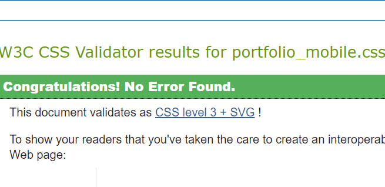
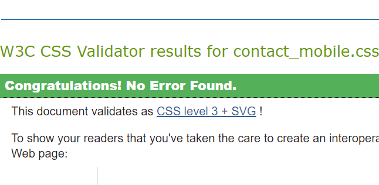
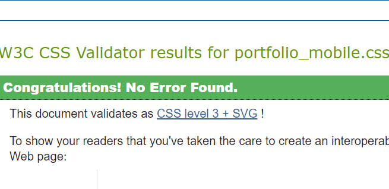

Site Report
Web development of a personal portfolio was a very difficult and ironically rather quite fascinating experience. From the simple aspects such as deciding what colour background and theme you would want your website to be, all the way to the complex coding required to make certain aspects of the website work as and when they should. Throughout the whole process, I faced many challenges but however made use of the provided resources such as the slides from the lectures as well as other online resources including among many YouTube, W3Schools and Stack Overflow which have very large supportive community groups. Having all these resources also required me to be actively engaged in the development process as they made use of alternative web development processes such as the use of the div tag. This allowed me to get an idea of how to go about development of certain pages in the manner I had depicted them but also required me to integrate that idea using the modern development processes. As for the colour scheme, I wanted to allow the website to be personal and show the user who I am. I chose to go with a majority of darker colours as that seems to convey a more professional demeanour and also added some highlights of my favourite colour blue but had to do this whilst also making it as subtle as possible. I also felt since the overall background of the website was black, the grey used for the menu would allow a perfect contrast for the sky-blue used to fit in. I went through many design changes and alternations, from having a logo at first, to even having a totally different colour scheme. The desktop version of the site report screen validation images require hovering to increase the scale of the image and this did not come out as according to plan, but generally with the whole project, I am pleased with what I have produced.
 


